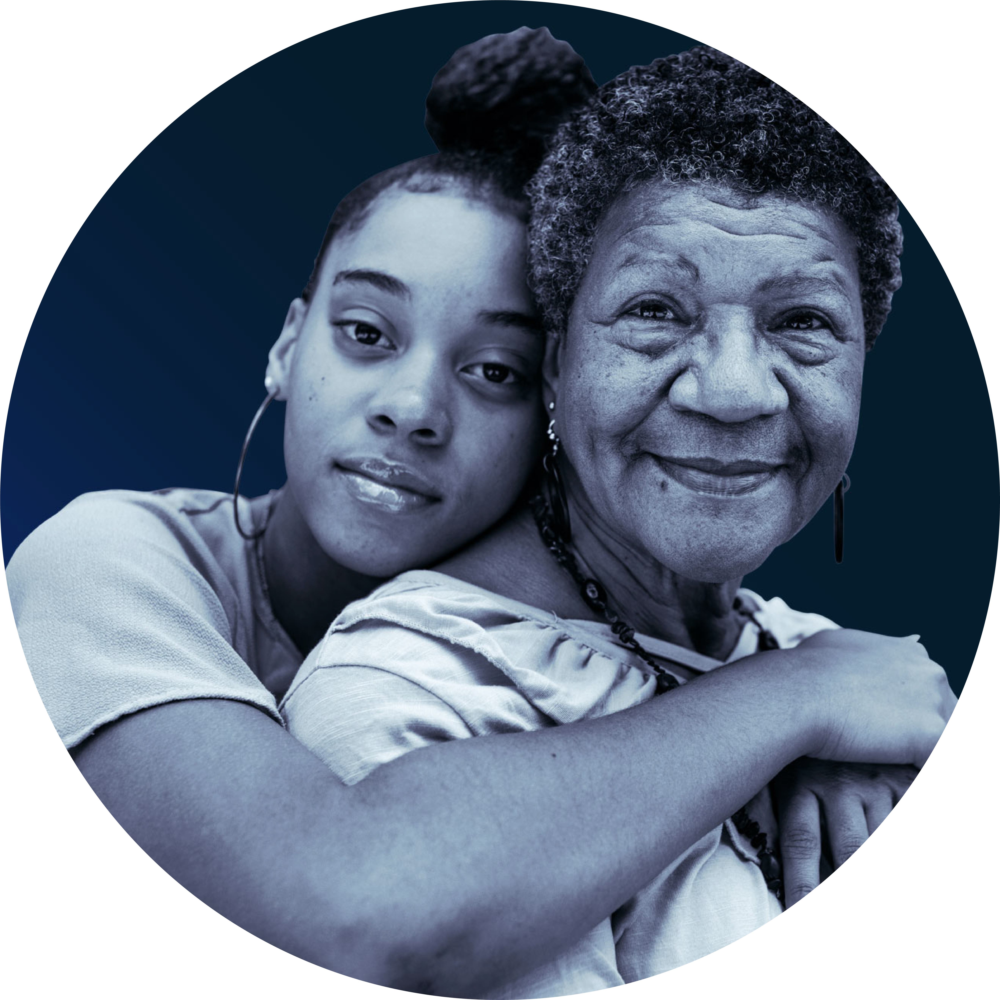

In this monthly post, I highlight some of the best thought-leadership articles and reports that cross my desk. I note why they rise to the top of the pile and are worth reading (or skimming), even if they focus on functions or industries outside your areas of interest. Among the criteria I use to make the selections are freshness and provocativeness of insights and timeliness, analytical rigor, depth of prescriptions, and
overall readability.
Below, I note some of the more compelling work that professional services firms have published recently on the business, economic, and social implications of the COVID-19 pandemic. And, adding something a little different this time, I excerpt introductions to offer a better idea of the content of the articles.

Innovation for
sustainability:
Solving the plastics and
packaging challenge
PA Consulting
Tracking the trends 2019:
The top 10 issues
transforming the future
of mining
Deloitte
“
Insurtechs on the rise”
Bain
Securing software as a
service”
McKinsey
“
Paying for value in
health care
BCG
Featured themes
“
“
Read the report

Read the report
Read the article
“
Read the article
“
Read the report
Back to top


Strategy
Public sector
Retailing
Climate change
Media

Back to top
Landing page
CEO perspective
“A CEO plan for coronavirus: Actions to take now”
Tracking the crisis through its “Situational Threat Report Index
“Tracking the global impact of the coronavirus outbreak”
Bain & Company
Strategy
“COVID-19: Investing in black lives and livelihoods,” McKinsey & Company
McKinsey consultants discuss why Black Americans are disproportionally affected by the COVID-19 pandemic.
Amid the rising deaths, infections, and possible economic implosion of the COVID-19 pandemic, our country’s most pressing need is to save lives and arrest any plunge into a prolonged recession or depression. The crisis is already hitting major social and economic systems, yet black Americans will experience a disproportionate share of the disruption—from morbidity and mortality to unemployment and bankruptcy.
McKinsey analysis shows that black Americans are almost twice as likely to live in the counties at highest risk of health and economic disruption, if or when the pandemic hits those counties. . . . In addition, we found that 39 percent of all jobs held by black Americans—compared with 34 percent held by white Americans—are now threatened by reductions in hours or pay, temporary furloughs, or permanent layoffs, totaling 7 million jobs.
Indeed, the pandemic underscores the consequences of the structural disparities that have persisted in this country for centuries while presenting an opportunity to invest in building more equitable systems that will benefit society overall. In this article, we outline some of the key findings from our report on COVID-19 and black America.”
Read the article or the full report upon which it is based
Public sector

Chinese consumers are known for the speed at which they adopt new digital technologies. Even before the lockdown, online ordering and payments, had already become the norm in most large cities.
With the COVID-19 crisis came a new imperative: one that further transformed shopping and buying habits. Pushed by necessity and bringing together innovations that were at various levels of maturity before the lockdown, Chinese retailers and brands brought to life a new way of shopping that can be thought of as Touchless Retail. This means eliminating or making virtual all possible human touchpoints across the end-to-end customer journey from product selection to delivery at the doorstep:
•Search, evaluation and product selection is completed on a smartphone.
•The order to payment cycle is also completed on smartphone.
•Human intervention in order fulfillment and delivery are reduced to the minimum with the use of robotics and automation.
•Automated drop-off or pick-up stations installed in apartment buildings or local communities prevent human contact at the point of receipt.”
Retailing
“Addressing climate change in a post-pandemic world,”
McKinsey & Company
In this McKinsey Quarterly article, McKinsey consultants explore lessons from the pandemic that could help address climate change.
Given the scope and magnitude of this sudden crisis, and the long shadow it will cast, can the world afford to pay attention to climate change and the broader sustainability agenda at this time? Our firm belief is that we simply cannot afford to do otherwise. Not only does climate action remain critical over the next decade, but investments in climate-resilient infrastructure and the transition to a lower-carbon future can drive significant near-term job creation while increasing economic and environmental resiliency. And with near-zero interest rates for the foreseeable future, there is no better time than the present for such investments.
To meet this need and to leverage this opportunity, we believe that leaders would benefit from considering three questions:
•What lessons can be learned from the current pandemic for climate change?
•What implications—positive or negative—could our pandemic responses hold for climate action?
•What steps could companies, governments, and individuals take to align our immediate pandemic response with the imperatives
of sustainability?”
Read the article
Climate change
Read the article
Media
The COVID-19 crisis has posed a number of severe challenges for businesses, from reacting to the outbreak, preparing for a potential recession, anticipating an eventual rebound in demand and placing bets against the post-crisis landscape. But it also provides an opportunity for organizations to step back and assess their approach to strategy and their strategic capabilities. As the context in which businesses operate becomes more dynamic and unpredictable, driven by the pace of technological change and a high degree of interconnectedness, we should expect other shocks of a similar nature moving forward, whether the trigger comes from biological pathogens, cyberattacks, market crashes, or another sources. Some will be exogenous to the business world, but some will be endogenous.
How can companies be better prepared for when those shocks occur? We see 10 strategic lessons emerging from the current crisis.”
“What if LIBOR transition is postponed? A practical guide,” Oliver Wyman
The London Interbank Offered Rate (LIBOR) transition may seem esoteric, but lots of money is at stake. Oliver Wyman, which has followed the issue closely, addresses whether the pandemic will delay the transition.
Market participants have been preparing for the permanent discontinuation of LIBOR, which industry regulators have indicated could be as early as the end of next year. This is a massive task impacting the entire financial services industry with, according to Oliver Wyman estimates, costs to the industry well over $5 billion dollars. But that was before COVID-19. So, if you’re involved in LIBOR . . . how should the market and your firm react now?
. . . Although regulators have indicated that the industry should stick to the 2021 date, it does seem possible that LIBOR transition may end up being extended by 1 or 2 years. The natural inclination of many will be to freeze their programs and restart at a later time. In our view, that would be a terrible mistake. LIBOR is still a fragile rate, unsecured interbank lending is unlikely to increase in volume, and regulators will still want the industry to be prepared for LIBOR’s end.
But if there is a delay, the market and firms can use that time to
their advantage.”
Read the report
Finance
The COVID-19 pandemic represents a historic crisis that is causing leaders and companies to rethink the way they operate. The most effective leaders are thinking not just about their immediate crisis response but also about how their choices now will position their companies in the post-crisis world. But, in a situation changing daily, it’s nearly impossible for any single organization to think that far ahead. By bringing together a range of perspectives, it is possible to sketch out a number of possible futures in 2023 that will allow leaders to incorporate foresight into their business and human capital decisions during the crisis and beyond.
We’ve turned to scenario planning, a methodology that is focused not on trying to predict the future from past trend lines but on how different uncertainties will combine to form a diverse set of futures, hinged around two high-impact uncertainties: economic rebound and social trust. Specifically, we have developed macro scenarios for the future of human capital in the year 2023, stemming from the COVID-19 crisis, with implications for companies operating in different industries as well as regions of the world.”
Organization

Finance
Organization
Strategy
Public sector
Retailing
Climate change
Media
Finance
Organization
Featured themes
Supply-chain issues
Leadership during the COVID-19 crisis
Geographical focus: China and the crisis
Cyber risks
Addressing the business impact of the crisis
Media
Finance
“Emerging strategy lessons from covid-19,” BCG Henderson Institute
The chairman of the BCG Henderson Institute and several other co-contributors weigh in on emerging strategy lessons from COVID-19.
The COVID-19 crisis has posed a number of severe challenges for businesses, from reacting to the outbreak, preparing for a potential recession, anticipating an eventual rebound in demand and placing bets against the post-crisis landscape. But it also provides an opportunity for organizations to step back and assess their approach to strategy and their strategic capabilities. As the context in which businesses operate becomes more dynamic and unpredictable, driven by the pace of technological change and a high degree of interconnectedness, we should expect other shocks of a similar nature moving forward, whether the trigger comes from biological pathogens, cyberattacks, market crashes, or another sources. Some will be exogenous to the business world, but some will be endogenous.
How can companies be better prepared
for when those shocks occur? We see
10 strategic lessons emerging from the current crisis.
Read the article
Strategy
“COVID-19: Investing in black lives and livelihoods,” McKinsey & Company
McKinsey consultants discuss why black Americans are disproportionally affected by the COVID-19 pandemic.
Amid the rising deaths, infections, and possible economic implosion of the COVID-19 pandemic, our country’s most pressing need is to save lives and arrest any plunge into a prolonged recession or depression. The crisis is already hitting major social and economic systems, yet black Americans will experience a disproportionate share of the disruption—from morbidity and mortality to unemployment and bankruptcy.
McKinsey analysis shows that black Americans are almost twice as likely to live in the counties at highest risk of health and economic disruption, if or when the pandemic hits those counties. . . . In addition, we found that 39 percent of all jobs held by black Americans—compared with 34 percent held by white Americans—are now threatened by reductions in hours or pay, temporary furloughs, or permanent layoffs, totaling 7 million jobs.2
Indeed, the pandemic underscores the consequences of the structural disparities that have persisted in this country for centuries while presenting an opportunity to invest in building more equitable systems that will benefit society overall. In this article, we outline some of the key findings from our report on COVID-19 and black America.
Read the article or the full report upon which it is based
Public sector
“Touchless Retail: What the rest of the world could learn from China’s new ways to shop,” Capgemini
Capgemini reports on what retailers can learn from China on new ways to shop.
Chinese consumers are known for the
speed at which they adopt new digital technologies. Even before the lockdown, online ordering and payments, had already become the norm in most large cities.
With the COVID-19 crisis came a new imperative: one that further transformed shopping and buying habits. Pushed by necessity and bringing together innovations that were at various levels of maturity before the lockdown, Chinese retailers and brands brought to life a new way of shopping
that can be thought of as Touchless Retail. This means eliminating or making virtual all possible human touchpoints across the end-to-end customer journey from product selection to delivery at the doorstep:
•Search, evaluation and product selection is completed on a smartphone.
•The order to payment cycle is also completed on smartphone.
•Human intervention in order fulfillment and delivery are reduced to the minimum with the use of robotics and automation.
•Automated drop-off or pick-up stations installed in apartment buildings or local communities prevent human contact at the point of receipt.
Read the article
Retailing
“Addressing climate change in a post-pandemic world,” McKinsey & Company
In this McKinsey Quarterly article,
McKinsey consultants explore lessons from the pandemic that could help address
climate change.
Given the scope and magnitude of this sudden crisis, and the long shadow it will cast, can the world afford to pay attention to climate change and the broader sustainability agenda at this time? Our firm belief is that we simply cannot afford to do otherwise. Not only does climate action remain critical over the next decade, but investments in climate-resilient infrastructure and the transition to a lower-carbon future can drive significant near-term job creation while increasing economic and environmental resiliency. And with near-zero interest rates for the foreseeable future, there is no better time than the present for such investments.
To meet this need and to leverage this opportunity, we believe that leaders would benefit from considering three questions:
•What lessons can be learned from the current pandemic for climate change?
•What implications—positive or negative—could our pandemic responses hold for climate action?
•What steps could companies, governments, and individuals take to align our immediate pandemic response with the imperatives
of sustainability?
Read the article
Climate change
“Coronavirus: Here’s streaming platforms’ path to lasting customer relationships,”
Bain & Company
Bain notes that people are watching more video content while confined at home. Are streaming platforms up to the task?
This is a critical moment for streaming platforms for multiple reasons. Due to the coronavirus crisis, households are consuming more content from streaming services. But recent Bain research indicates that by 2024 consumer demand in the US will max out at three to four streaming services per subscribing household.
This implies only a few players will be able to reach meaningful scale over the long term. That means streaming services are under pressure not only to meet customers’ needs during the crisis, but also to take proactive steps now to put their businesses in a stronger position coming out of it. We see three major actions video-streaming services can take to accomplish both goals.
Read the article
Media
“What if LIBOR transition is postponed? A practical guide,” Oliver Wyman
The London Inter-bank Offered Rate (LIBOR) transition may seem esoteric, but lots of money is at stake. Oliver Wyman, which has followed the issue closely, addresses whether the pandemic will delay the transition.
Market participants have been preparing for the permanent discontinuation of LIBOR, which industry regulators have indicated could be as early as the end of next year. This is a massive task impacting the entire financial services industry with, according to Oliver Wyman estimates, costs to the industry well over $5 billion dollars. But that was before COVID-19. So, if you’re involved in LIBOR . . . how should the market and your firm
react now?
. . . Although regulators have indicated that the industry should stick to the 2021 date, it does seem possible that LIBOR transition may end up being extended by 1 or 2 years. The natural inclination of many will be to freeze their programs and restart at a later time. In our view, that would be a terrible mistake. LIBOR is still a fragile rate, unsecured interbank lending is unlikely to increase in volume, and regulators will still want the industry to be prepared for LIBOR’s end.
But if there is a delay, the market and firms can use that time to their advantage.
Read the report
Finance
“
“
“Emerging strategy lessons from COVID-19,” BCG Henderson Institute
The chairman of the BCG Henderson Institute and several other
co-contributors weigh in on emerging strategy lessons from COVID-19.
Read the article
“Touchless Retail: What the rest of the world could learn from China’s new ways to shop,” Capgemini
Capgemini reports on what retailers can learn from China on new ways to shop.
Read the article
“
“
“Coronavirus: Here’s streaming platforms’ path to lasting customer relationships,” Bain & Company
Bain notes that people are watching more video content while confined at home. Are streaming platforms up to the task?
This is a critical moment for streaming platforms for multiple reasons. Due to the coronavirus crisis, households are consuming more content from streaming services. But recent Bain research indicates that by 2024 consumer demand in the US will max out at three to four streaming services per subscribing household.
This implies only a few players will be able to reach meaningful scale over the long term. That means streaming services are under pressure not only to meet customers’ needs during the crisis, but also to take proactive steps now to put their businesses in a stronger position coming out of it. We see three major actions video-streaming services can take to accomplish both goals.”
“
“
“COVID-19 and the future of work: Four scenarios,” Heidrick & Struggles
Amid the pandemic, Heidrick & Struggles derives four scenarios for the future of human capital in the year 2023.
Read the article
“
“
“
“
“
“
“